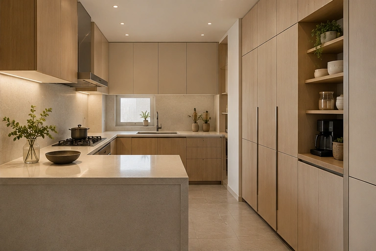

Kitchen systems
A coordinated system of cabinet fronts, pantry doors and island facings. Appliances, sinks and cooking zones need their own technical interfaces.
- Finish positions
- Door faces, end panels, tall-unit fronts and non-food-contact appliance surrounds.
- Details to resolve
- Grain continuity, handle drilling, hinge clearance, edge returns and joins between unlike materials.
- Environment
- Splash, steam, cleaners and heat near appliances. Identify exposure rather than assuming a decorative film suits every zone.
- Approval
- Review a sample door with the proposed substrate, bonding system and cleaning method.